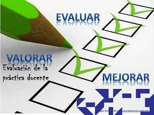

Registro descriptivo
Instrumento de evaluación: El registro descriptivo 
Es una herramienta cuya finalidad es registrar por escrito información de competencias observables y determinadas a través de criterios específicos de una actividad, en un tiempo y lugar determinado. El registro descriptivo no debe contener apreciaciones personales y subjetivas del profesor.
¿Como elaborar un registro descriptivo?
1.- Seleccione la actividad a observar
2.- Elabore una ficha que contenga la competencia a evaluar (capacidad, destreza o habilidad), indicador, actividad evaluada, relación de alumnos, descripción de lo observado e interpretación de lo observado.
¿Para que se usa el instrumento?
Para medir el desempeño del alumno, está dirigido especialmente para el saber hacer
Métodos y técnicas de uso
Puede ser utilizado en los métodos y técnicas siguientes:
Prácticas de laboratorio, taller o empresas
Simulación
Aprendizaje auxiliado con las TIC
Aprendizaje situado
Equipos colaborativos
Aprendizaje basado en Proyectos
Los registros descriptivos son útiles para :
-
Recoger información positiva o negativa sobre la participación del observado, para analizarla, interpretarla y tomar decisiones.
-
Describir una amplia gama de manifestaciones del alumno, en relación a los contenidos del saber, hacer y convivir (utilizando un lenguaje sencillo).
Diferencia entre el registro anecdótico y el registro descriptivo
Se parece al registro anecdótico, con la diferencia que, en este caso, el docente determina con anterioridad en qué situación va a evaluar al alumno (competencia u objetivo), en atención a qué aspectos lo va a evaluar (criterios o indicadores). Seguidamente, describe lo que el participante es capaz de hacer tanto positivo como negativo e interpreta o comenta los hechos observados.
Características:
-
Similar al registro anecdótico
-
La única diferencia es que en el anecdótico se registra una anécdota, una historia, y en el descriptivo, se registra un aprendizaje del niño, un logro o una dificultad.
-
Los registros descriptivos suelen ser más frecuentes y más complejos que los anecdóticos
-
Tratan de captar elementos más importantes y con el mayor detalle
Ventajas del registro anecdótico y descriptivo
-
Describen la conducta tal y cual se produce
-
Proporcionan datos sobre el proceso (cómo lo hace)
-
No interfiere con la espontaneidad del alumno
-
Pueden ser registrados y agregársele información
Desventajas del registro anecdótico y descriptivo
-
El observador debe conocer las características del desarrollo del niño
-
Se requiere de un observador entrenado
-
Se necesita tiempo y condiciones de tranquilidad
-
Se deben realizar un mínimo de 5 registros diarios
FORMATO
|
REGISTRO DESCRIPTIVO |
||
|
Competencia: |
Fecha: |
|
|
Indicador: |
Actividad: |
|
|
Alumnos |
Descripción de la observación |
Interpretación de la observación |
|
1.- |
||
|
2.- |
||
|
3.- |
||
|
4.- |
||